Movie review by : SFAM
Year : 2005
Directed by : Karyn Kusama
Written by : Phil Hay & Matt Manfredi
Degree of Cyberpunk visuals : High
Correlation to Cyberpunk themes : Medium
Rating : 6/10
Key cast members :
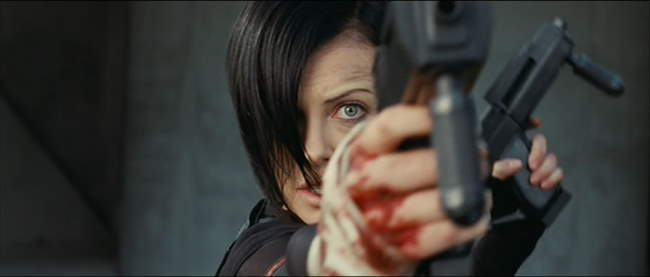
Overview: In the best of cases, remakes of cherished shows rarely turn out good. The MTV Aeon Flux cartoon series was an intensely creative post-modern show by Peter Chung, who broke all the rules of how narratives are supposed to be told. The lead character, Aeon Flux, the ultimate anti-heroine, dies on a regular basis; nobody was purely evil or purely good; and everything was high-tech body modification chaos. Unfortunately, the movie does away with all that. In an attempt to "humanize" the iconic figure of Aeon Flux, the movie version goes for a standard rebels-versus-Orwellian bad guys movie with a twist. While some of the visuals are absolutely terrific (including some wonderful action scenes by Charlize Theron), in the end, this is a very different story with very different characters, and must be understood as such.
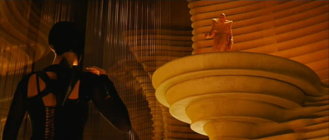
The Story: Aeon Flux takes place 400 years after a virus has devastated humanity, killing off 99% of the population. Now, one walled city named Bregna, holding 5 million people is all that remains of humanity. Bregna is ruled by a council of genetic scientists who have (supposedly) been avidly working on fixing the fallout of the virus for the past 400 years. For reasons only partially explained later in the story, the ruling council has instituted a totalitarian government with an extreme crackdown on personal freedoms, and have backed their authority with an intense surveillance apparatus. A group of rebels called the "Monicans" have challenged their right to rule, and have vowed to destroy the ruling council, especially their leader, Trevor Goodchild (Marton Csokas), at all costs.
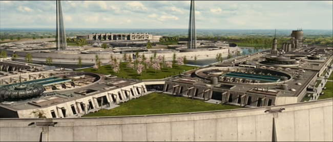
Aeon Flux (Charlize Theron) is the Monican's very athletic, butt-kicking, black spandex wearing operator-extraordinaire. No mission is too dangerous, and no obstacle is insurmountable. In what serves as the prologue, Aeon's last surviving family member, her sister is killed by the Bregan Council authorities ? all that remains for Aeon is revenge and the mission. Finally her time comes when the fiery-haired Monican handler (Frances McDormand) authorizes her to go assassinate Trevor Goodchild. So Aeon and her partner with four hands and no feet, Sithandra (Sophie Okonedo), storm the garden and infiltrate the Brega Council compound.
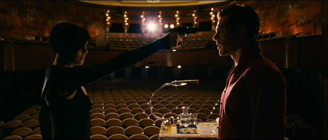
Unfortunately, as Aeon finally encounters Trevor, not all is at it seems. She suddenly has memories of kissing Trevor in a former life. Worse, it looks like there are other forces at work, and perhaps Trevor isn't the bad guy the Monicans have made him out to be. As Aeon follows her heart and the ever expanding mystery, she engenders anger from the Monicans, while Trevor ends up at the wrong side of a coup-des-tat at the hands of his evil brother, Oren Goodchild (Jonny Lee Miller).
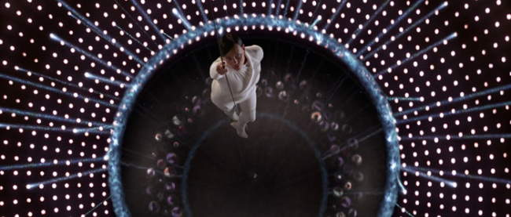
Story Problems: While the front half of the Aeon Flux story works, the back-end is riddled with inconsistencies. If you spend an ounce of time thinking through the motivations, the actions of the main bad guy make no sense. What he really wants (immortality) can be accomplished even Trevor's experiments prove successful. This is muddied further when the Jurassic Park mantra, "Nature finds a way" is added to the mix. Even weirder is Pete Postlethwaite's character, who comes across almost as the watcher in a Fantastic Four comic. We are never sure if he is real or Memorex. Worse, his final monologue where he explains his actions adds yet another strange element to the scifi-mix ? precognition. In the end, there are too many fantasy-like technologies for this to come across as believable. In brief discussions with on the writers (Phil Hay), it appears that the original script might have been tampered with. I really hope this is the case, as the visuals of the movie were more than strong that they would work for even a passable story.
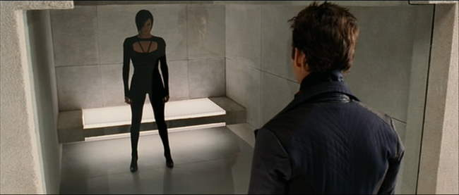
Changes With Aeon and Trevor From the Cartoon: The move version of Aeon Flux in no way matches the lead characters of Aeon Flux and Trevor. In Peter Chung's cartoon, Aeon Flux comes across as the ultimate anti-heroine. While she clearly knows right from wrong, and generally tries to stop the worst abuses, Aeon is an ultra-acrobatic, top-notch action-espionage heroine who works for herself, and only operates under her own agenda. Trevor is a mostly malevolent, superior dictatorial character who as a true soft-spot for Aeon. For her, he will bend his approach, but otherwise he rarely is a nice guy. We rarely see fear, doubt, or self-loathing out of Aeon, although she too has an eternal love for Trevor that trumps all. Kusama's version of Aeon and Trevor tries to humanize them, and in doing so, removes much of their uniqueness and appeal. New motivations and afflictions are created where none previously existed. Worse, their very nature changes. In the end, Trevor turns out to be a misunderstood hero who works valiantly to save humanity ? his only fault is he turns a blind eye to his brother's excesses. Aeon becomes an agent working for others goals, but only later turns to herself based on principled evaluation of what is right and wrong. Again, while both of these characters may be interesting if done well, they bare little resemblance to the mindset of the Aeon and Trevor characters from the original show.
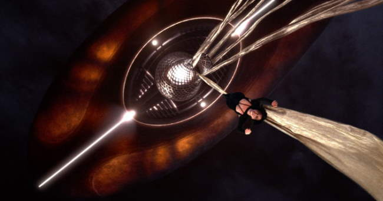
Still, I must give credit to Charlize Theron's athletic feats in this movie. By all accounts she spent 3 months training to be a gymnast and fighter, and it shows. While for the most part she does away with the ultra skimpy clothes from the cartoon, she really does nail the gracefulness and style of the cartoon Aeon Flux. And while I don't necessarily agree with the humanization approach, Aeon does pull this off very well, especially considering she has very little dialogue. The fact that she got seriously injured on the tenth day of shooting (herniated disc injury), but came back to continue the vast majority of the stunt work is a testament to her commitment and professionalness, and should be applauded. If I had one complaint with her protrayal, she really doesn't really "look" the part, in that the cartoon character was a taller figure with a far more angular face and tapered hair.
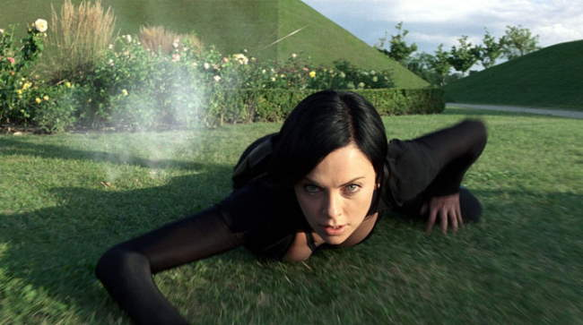
Editing is Way Too Frantic: Aeon Flux was a very contemplative animated show. Almost always, you had time to properly digest a scene. The atmosphere of the original series is largely based on the pacing. In the movie version, the editing seems designed to artificially hype the tension. In the end, it results in sucking the life out of many of the scenes. You rarely have time to feel connected to the scenes. More often, you feel like you're riding a roller coaster, even when the scene is nothing more than two people talking.
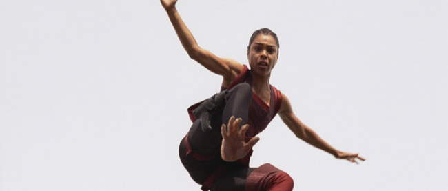
The Technologies in Aeon Flux: The body modifications (such as hands replacing feet, and various stuff stored within the skin) in Aeon Flux really added to the visual appeal. Also, there were a number of interesting technological innovations. Probably the biggest was the peer-to-peer interaction in "brain space" that the Monicans use to elude the Orwellian-style surveillance systems that the council has set up. The flat metal slices that turn into semi-autonomous exploding balls were visually cool, as was the room that worked in two dimensions (each dimension of frequency holding completely different items). I also liked the bubbling Band-Aids that Aeon has stored, hiding on her skin.
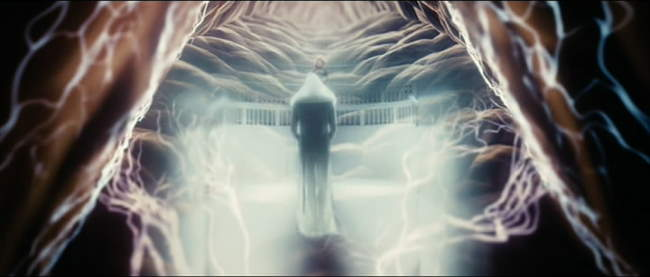
The larger technology involved cloning. In Aeon Flux, cloning equates to flawed reincarnation. With each generation the people are cloned, the memories of their lives somehow stay with their soul ? yet with each time they are cloned, the new person has memories from the previous versions. Over time, the cloning ends up destroying each other's reality. For the most part, I don't think this idea worked all that well. It gets especially troublesome when we look at the Keeper, who seems to be able to "remember forward" and thus, make decisions 400 years ago that will help save the world well into the future.
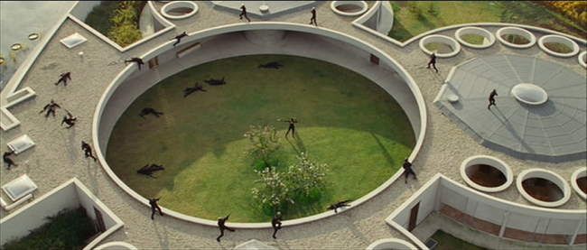
The Visuals: Visually, Aeon Flux is a gorgeous movie. We have also sorts of beautiful futuristic city settings, beautiful characters, and really fun FX. Some of the visuals are completely nonsensical though ? the most egregious being an early scene involving Aeon wearing white for the ONLY time in the movie when she wants to stealthily sneak into the Brega compound at night. While this helped make Aeon's character stand out more, it immediately brings a sense of Hollywood unreality to the whole affair. Still, while many of the action scenes didn't make lots of sense, they were all nicely shot. Some of the fights were pretty gritty, but for the most part, the resembled a gun-version of a kung-fu dance movie.
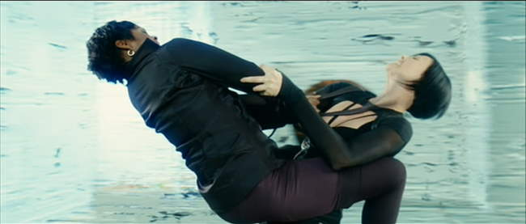
Lots of Hawt Chick Fighting! One of the better aspects of Aeon Flux involves the massive amounts of hawt chick fighting! Yes, its low-brow, but we like it. We get some really juicy fights between Aeon and Sithandra, and Aeon and Trevor's bodyguard, Freya (Caroline Chikezie). And of course we have massive amounts of Charlize Theron in tight black spandex, kicking butt. While some have compared this aspect to Catwoman, the comparisons are unfair in that 1) we don't have Mouseketeer ears, 2) all the fighters are very athletic, unlike Sharon Stone in Catwoman, and 3) the fight choreography is far far better.
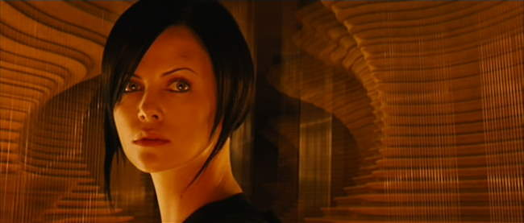
The Bottom Line: While there enough to like in Aeon Flux to give it a passing grade, I really can't give it more than that. A movie version of Aeon Flux should have been a creative, postmodern event that stayed true to the cores of the characters in the cartoon. Evidentally, the studio thought an innovative approach such as this wouldn't fly with the vast movie-going public. What was created instead, even though different, could have been decent, but was mired down with horrid editing choices and incoherent motivations in the later half of the story. In the end, it's hard to buy a number of the decisions various characters made.
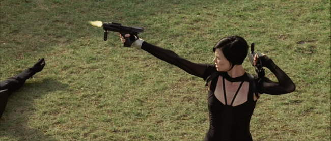
However, the narrative problems in Aeon Flux may be due more to ridiculous studio meddling than with the actual script ? apparently the editing was one casualty of studio meddling. Phil Hay has indicated that he will write an essay on how the Director's Cut would have been different. He is hoping that DVD sales will be high enough that the studio will agree to release the Director's Cut, which he claims is a very different movie. Still, Charlize Theron's excellent acrobatics makes for good eye candy, and turns in a credible performance as a humanized version of Aeon (the Trevor portrayal is completely uncrecognizable from the cartoon though). The visuals are terrific, and the technology is pretty interesting. Similar to other 6 star movies that are high on visuals but have problematic stories (Ultraviolet, T3, Appleseed), you may still be interested in giving this a watch.